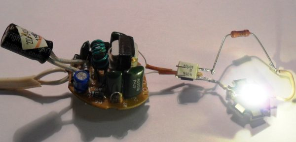
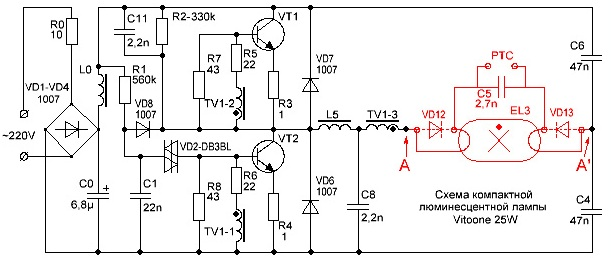
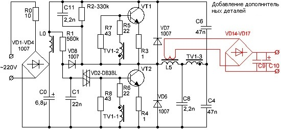
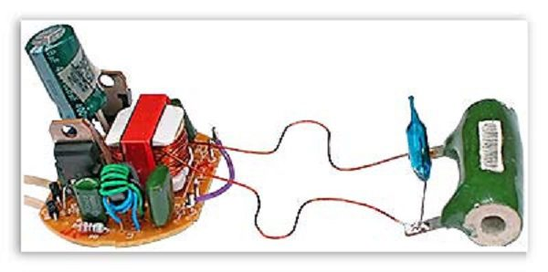
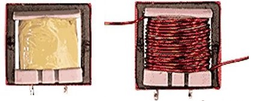
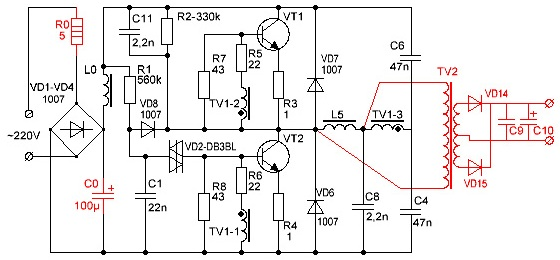
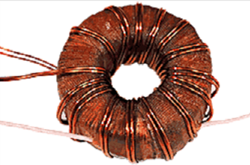
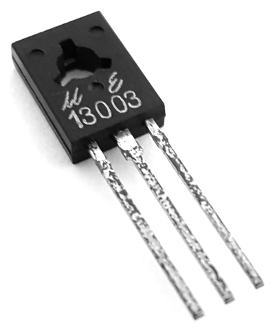
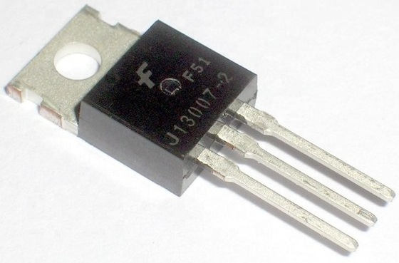

Блок питания из энергосберегающей лампы
Если вышел из строя сам светильник энергосберегающей лампы, то из электронной «начинки» можно сделать довольно мощный блок питания на любое нужное напряжение.

Рис. 1 - Блок питания из энергосберегающей лампы
В общих чертах работу импульсного блока питания можно описать следующим образом:
- Переменный сетевой ток преобразуется в постоянный без изменения его напряжения, т.е. 220 В.
- Широтно-импульсный преобразователь на транзисторах превращает постоянное напряжение в прямоугольные импульсы, с частотой от 20 до 40 кГц (в зависимости от модели лампы).
- Это напряжение через дроссель подается на светильник.
Рассмотрим схему и порядок работы импульсного блока питания лампы (рис. 2) .

Рис. 2 - Схема блока питания энергосберегающей лампы
Сетевое напряжение поступает на мостовой выпрямитель(VD1-VD4) через ограничительный резистор R0 небольшого сопротивления, далее выпрямленное напряжение сглаживается на фильтрующем высоковольтном конденсаторе (С0), и через сглаживающий фильтр (L0) подается на транзисторный преобразователь.
Запуск транзисторного преобразователя происходит в тот момент, когда напряжение на конденсаторе С1 превысит порог открытия динистора VD2. Это запустит в работу генератор на транзисторах VT1 и VT2, благодаря чему возникает автогенерация на частоте около 20 кГц.
Другие элементы схемы, такие как R2, C8 и C11, играют вспомогательную роль, облегчая запуск генератора. Резисторы R7 и R8 увеличивают скорость закрытия транзисторов.
А резисторы R5 и R6 служат как ограничительные в цепях баз транзисторов, R3 и R4 предохраняют их от насыщения, а в случае пробоя играют роль предохранителей.
Диоды VD7, VD6 – защитные, хотя во многих транзисторах, предназначенных для работы в подобных устройствах, такие диоды встроены.
TV1 – трансформатор, с его обмоток TV1-1 и TV1-2, напряжение обратной связи с выхода генератора подается в базовые цепи транзисторов, создавая тем самым условия для работы генератора.
На рисунке 2 красным цветом выделены детали, подлежащие удалению при переделке блока, точки А–А` нужно соединить перемычкой.
Перед тем как приступить к переделке блока питания, следует определиться с тем, какую мощность тока необходимо иметь на выходе, от этого будет зависеть глубина модернизации. Так, если требуется мощность 20-30 Вт, то переделка будет минимальной и не потребует большого вмешательства в существующую схему. Если необходимо получить мощность 50 Вт и более, то модернизация потребуется более основательная.
Мощность можно вычислить по формуле:
P=IU,
где
Р – мощность, Вт,
I – сила тока, А,
U – напряжение, В.
Например, возьмем блок питания со следующими параметрами: напряжение – 12 В, сила тока – 2 А, тогда мощность будет:
Р=2·12=24 [Вт]
С учетом перегрузки можно принять 24-26 Вт, так что для изготовления такого блока потребуется минимальное вмешательство в схему энергосберегающей лампы мощностью 25 Вт.

Рис. 3 - Добавление новых деталей в схему блока питания из энергосберегающей лампы
Добавляемые детали выделены на рис. 3 красным цветом:
- диодный мост VD14-VD17;
- два конденсатора С9, С10;
- дополнительная обмотка, размещенная на балластном дросселе L5, количество витков подбирается опытным путем.
Добавляемая обмотка на дроссель играет еще одну немаловажную роль разделительного трансформатора, предохраняя от попадания сетевого напряжения на выход блока питания.
Чтобы определить необходимое количество витков в добавляемой обмотке, следует проделать следующие действия:
- на дроссель наматывают временную обмотку, примерно 10 витков любого провода;
- соединяют с нагрузочным сопротивлением, мощностью не менее 30 Вт и сопротивлением примерно 5-6 Ом;
- включают в сеть, замеряют напряжение на нагрузочном сопротивлении;
- полученное значение делят на количество витков, узнают, сколько вольт приходится на 1 виток;
- вычисляют необходимое число витков для постоянной обмотки.
При испытательных включениях рекомендуется применять схему, которая предохранит от выхода из строя блока питания, ее схематичное изображение приведено на рисунке 4.

Рис. 4 - Испытательное включение переделанного блока питания
После этого легко вычислить необходимое число витков. Для этого напряжение, которое планируется получить от этого блока, делят на напряжение одного витка, получается количество витков, к полученному результату добавляют про запас примерно 5-10%.
W=Uвых/Uвит,
где
W – количество витков;
Uвых – требуемое выходное напряжение блока питания;
Uвит – напряжение на один виток.

Рис. 5 - Намотка дополнительной обмотки на штатный дроссель
Оригинальная обмотка дросселя находится под напряжением сети! При намотке поверх нее дополнительной обмотки необходимо предусмотреть межобмоточную изоляцию, особенно если наматывается провод типа ПЭЛ, в эмалевой изоляции. Для межобмоточной изоляции можно применить ленту из политетрафторэтилена для уплотнения резьбовых соединений, которой пользуются сантехники, ее толщина всего 0,2 мм.
Мощность в таком блоке ограничена габаритной мощностью используемого трансформатора и допустимым током транзисторов.
Для изготовления блока питания повышенной мощности потребуется более сложная модернизация:
- дополнительный трансформатор на ферритовом кольце;
- замена транзисторов;
- установка транзисторов на радиаторы;
- увеличение емкости некоторых конденсаторов.
В результате такой модернизации получают блок питания мощностью до 100 Вт, при выходном напряжении 12 В. Он способен обеспечить ток 8-9 А. Этого достаточно для питания, например, шуруповерта средней мощности.
Схема модернизированного блока питания приведена на рисунке 6.

Рис. 6 - Схема блока питания мощностью 100 Вт
Как видно на схеме, резистор R0 заменен на более мощный (3-ваттный), его сопротивление уменьшено до 5 Ом. Его можно заменить на два 2-ваттных по 10 Ом, соединив их параллельно. Далее, С0 – его емкость увеличена до 100 мкф, с рабочим напряжением 350 В. Если нежелательно увеличивать габариты блока питания, то можно подыскать миниатюрный конденсатор такой емкости.
Для обеспечения надежной работы блока полезно несколько уменьшить номиналы резисторов R5 и R6, до 18–15 Ом, а также увеличить мощность резисторов R7, R8 и R3, R4. Если частота генерации окажется невысокой, то следует увеличить номиналы конденсаторов C3 и C4 – 68н.
Самым сложным может оказаться изготовление трансформатора. Для этой цели в импульсных блоках чаще всего используют ферритовые кольца соответствующих размеров и магнитной проницаемости.
Расчет таких трансформаторов довольно сложен, но в интернете есть много программ, с помощью которых это очень легко сделать, например, «Программа расчета импульсного трансформатора Lite-CalcIT».

Рис. 7 - Схема блока питания мощностью 100 Вт
Расчет, проведенный с помощью этой программы, дал следующие результаты для сердечника из ферритового кольца:
- внешний диаметр – 40 мм,
- внутренний – 22 мм,
- толщина – 20 мм,
- первичная обмотка проводом ПЭЛ – 0,85 мм2 имеет 63 витка,
- две вторичных обмотки проводом ПЭЛ – 0,85 мм2 имеет12 витков.
Вторичную обмотку необходимо наматывать сразу в два провода, при этом их желательно предварительно слегка скрутить между собой по всей длине, так как эти трансформаторы очень чувствительны к несимметричности обмоток. Если не соблюдать это условие, то диоды VD14 и VD15 будут нагреваться неравномерно, а это еще больше увеличит несимметричность что, в конце концов, выведет их из строя.
Зато такие трансформаторы легко прощают значительные ошибки при расчете количества витков, до 30%.
Так как эта схема изначально рассчитывалась для работы с лампой мощностью 20 Вт, то установлены транзисторы средней мощности 13003. Их следует заменить на более мощные, например, 13007 (рис. 2). Возможно, их придется установить на металлическую пластину (радиатор), площадью около 30 см2.


Рис. 8 - Транзисторы 13003 (слева) и 13007 (справа)
Пробное включение стоит проводить с соблюдением некоторых мер предосторожности, чтобы не вывести из строя блок питания:
- Первое пробное включение производить через лампу накаливания 100 Вт, чтобы ограничить ток на блок питания.
- К выходу обязательно подключить нагрузочный резистор 3-4 Ома, мощностью 50-60 Вт.
- Если все прошло штатно, дать поработать 5-10 мин., отключить и проверить степень нагрева трансформатора, транзисторов и диодов выпрямителя.
Если в процессе замены деталей не были допущены ошибки, блок питания должен заработать без проблем.
Если пробное включение показало работоспособность блока, остается испытать его в режиме полной нагрузки. Для этого сопротивление нагрузочного резистора уменьшить до 1,2-2 Ом и включить его в сеть напрямую без лампочки на 1-2 минуты. После чего отключить и проверить температуру транзисторов: если она превышает 60°С, то их придется установить на радиаторы.
В качестве радиатора можно использовать как заводской радиатор, что будет наиболее верным решением, так и алюминиевую пластину, толщиной не менее 4 мм и площадью 30 см2. Под транзисторы необходимо подложить слюдяную прокладку, крепить их к радиатору нужно с помощью винтов с изолирующими втулками и шайбами (рис. 9).
Рис. 9 - Винты с изолирующими втулками и шайбами
Источники
jelectro.ru - Как сделать блок питания из энергосберегающих ламп